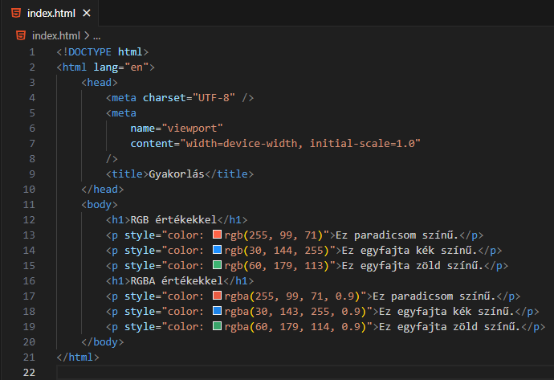
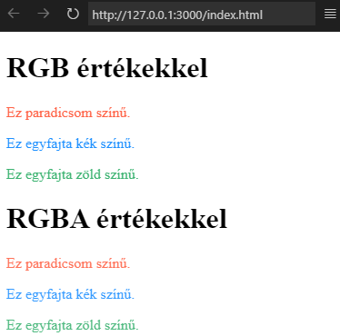
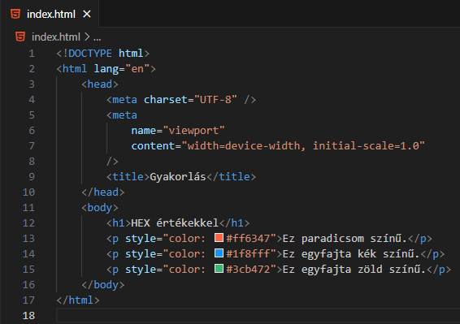
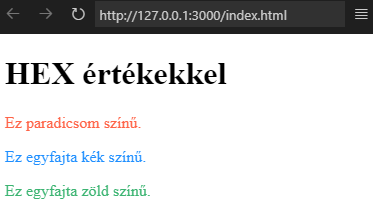
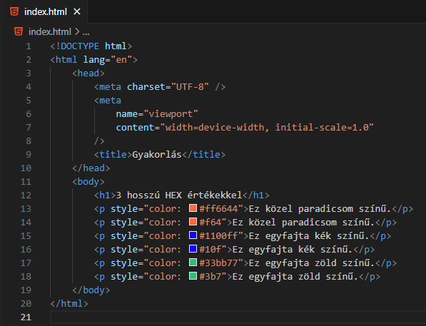
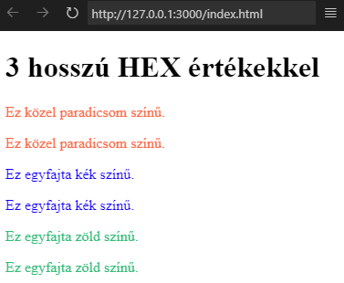
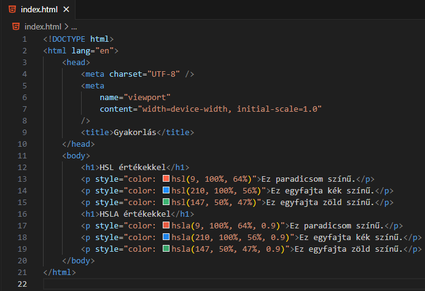
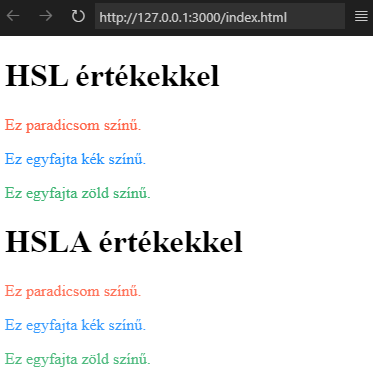

Hogyan tudunk színeket adni a weboldalunkhoz? RGB és RGBA
értékekkel.

A fenti kód eredménye.

Az első esetben a következő képletet használjuk:
rgb(red, green, blue), ahol a red, green
és blue értékek 0 és 255 között vannak.
A második esetben a következő képletet
használjuk:
rgba(red, green, blue, alpha), ahol a red,
green és blue értékek 0 és 255 között vannak,
míg az alpha 0.0 (teljesen átlátszó) és 1.0
(teljesen opálos) közötti.
Hogyan tudunk színeket adni a weboldalunkhoz? HEX
értékekkel.

A fenti kód eredménye.

Ebben esetben a következő képletet használjuk:
#rrggbb, ahol az rr, gg és bb értékek 00
(0) és ff (255) között vannak.

A fenti kód eredménye.

Abban az esetben, ha az rr, gg és bb értékeknél
mind a két hexadecimális érték ugyanaz, akkor a
3 hosszú HEX értéket használjuk:
#rgb, ahol az r, g és b értékek 0 (0) és f
(16) között vannak. #rrggbb = #rgb
Hogyan tudunk színeket adni a weboldalunkhoz? HSL és HSLA
értékekkel.

A fenti kód eredménye.

Az első esetben a következő képletet használjuk:
hsl(hue, saturation, lightness), ahol
-hue (árnyalat) egy fok a színkeréken
(0-360). 0-piros, 120-zöld és 240-kék
-saturation (telítettség) egy százalékos
érték 0%-szürke, 100%-teljes szín
-lightness (fényesség) egy százalékos
érték 0%-fekete és 100%-fehér
A második esetben a következő képletet
használjuk:
hsla(hue, saturation, lightness, alpha),
ahol -hue (árnyalat) egy fok a színkeréken
(0-360). 0-piros, 120-zöld és 240-kék
-saturation (telítettség) egy százalékos
érték 0%-szürke, 100%-teljes szín
-lightness (fényesség) egy százalékos
érték 0%-fekete és 100%-fehér -alpha 0.0
(teljesen átlátszó) és 1.0 (teljesen opálos)
közötti érték